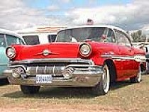

David W. Landrum
1957 Pontiac Super Chief
It was a summer world of grasshoppers
and weeds and the Pontiac Super Chief
my Dad parked in the back yard.
Chief Pontiac’s glass face was the ornament,
on the pale green hood; it lit up
when we turned the headlights on,
face full of light that blazed
down the new-made interstates;
the stereotypical stoic Indian look:
high cheek-bones, thin lips, straight nose
hooked at the end. He gazed out
on forsaken lands, on landscape altered
by time, supplanted by settlers;
his glass-carved face set firm,
unspeaking through the seasons;
stoic to winter snow or August heat —
August when we made a game,
were warriors and went out to fight for him,
and when we were in peril he would leave
his perch on the hood and fly,
a comet or a meteor in the night,
to strike the enemies who threatened us
like Pontiac did when he besieged Detroit,
gathering an alliance of tribes, keeping the English
pinned down for months on end. He realized
he could not take the fort and withdrew
to Illinois. The new United States sought
him out, negotiated with him. Later he was killed
by an Indian from the Peorian tribe
over some petty dispute. The myth could live,
and it ranged high those days. Texaco
sold Sky Chief gasoline. Pontiac had Star Chief,
Super Chief — products to erase accumulated loss.
In the lands he ruled and walked, spaces
where he was feared or venerated,
his cut-glass face divided the air —
the Wabash River, islands in the stream
of the Detroit, the massive trees
of Michigan, Great Lakes, old demesne
of the Ottawa, Mingo, Potawatomi,
Miami, Delaware. Place names now,
or product names, stamped faces made
of glass, of chrome, or phantoms pale
as light, names uttered, memory.
The Impossibility of Epithalamia
Absurd to write them — to lodge the alchemy
of marriage into lines of poetry;
to put restraint on the oldest mystery;
The mystery is great. I think it means
Christ and the Church. So Saint Paul gleans
the meaning — or at least to him it seems.
A man shall leave his parents, Genesis
says, and be joined to his wife, and then one flesh
they will become. Paul’s mystery is this.
Of course one flesh is just a euphemism
for those moments of ecstasy and spasm,
groaning madness ending in orgasm.
Besides that, there’s the steady architecture
of building two lives into one conjecture,
staying together under insane pressure.
So poems like Spenser or like Herrick made
to celebrate friends’ (or their) wedding days
fall short — and seem more like an escapade.
David W. Landrum is professor of Humanities at Cornerstone University, Grand Rapids, Michigan. His poetry and short stories have been published in Web Del Sol, The Barefoot Muse, Driftwood Review, Small Brushes, and many other magazines and journals. He edits the on-line journal Lucid Rhythms.
|